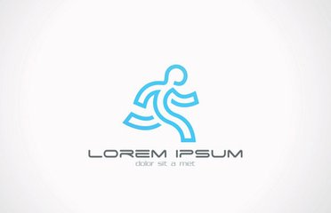

原则
凡是参加健身跑步的人，都应注意坚持经常和循序渐进，特别要注意控制运动量。此外，必须学会“自我控制”，这点尤为重要。因为有时跑步的愿望会突然消失，这就需要将“不能跑”还是“不想跑”加以区分。
在锻炼初期，跑步的速度以没有不舒服的感觉为限度，跑完的距离以没有吃力的感觉为宜。跑步后可能出现下肢肌肉疼痛，这是正常反应，坚持锻炼几天后这种现象就会消失。
为确定自己锻炼水平的等级，参加跑步锻炼三至四个月后可进行一些测验，测验时以12分钟跑完的距离为计算等级的起点。
30-39岁年龄组的人，12分钟跑完的距离达不到1.5-1.8公里，说明锻炼水平较差；如能达到1.8-2.6公里，说明锻炼水平为良好；如能超过2.6公里，即达到优秀锻炼水平。
40-49岁年龄组的人，锻炼水平较差者每12分钟跑完的距离为1.6公里以内；良好者为1.7-2.4公里；优秀者为2.5公里以上。 50岁以上较差、良好和优秀者每12分钟跑完的距离则分别为1.5公里以内、1.6-2.4公里和2.5公里以上。
在短期内取得理想结果是不可能的，只有经常锻炼才会提高锻炼水平。如果一周只跑一次，跑的距离再长也没有多少益处。因为在中断跑步的六天里，身体组织已将跑步带来的好处消耗得一干二净。因此，一周内跑步不得少于三次。平常缺乏锻炼的人，一旦决心开始经常性锻炼后，往往运动过量，这样会导致不良后果。
根据脉搏数字，不难分析出运动量的大小，及时进行必要的调整。一般来说，跑步5分钟后脉搏跳动不应超过120次/分，跑步10分钟后脉搏跳动不应超过100次/分。如果脉率过速，必须减少运动量或放慢跑步速度。